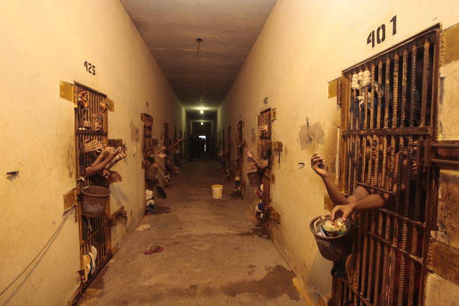
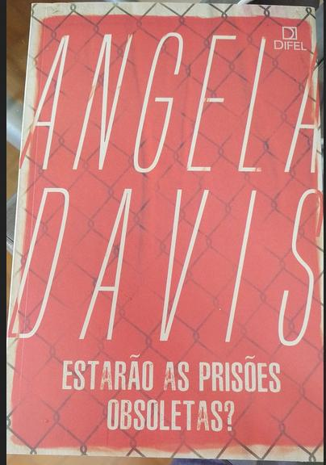

Pensando prisões e prisioneiros
Efeitos da leitura do livro "Estarão as Prisões Obsoletas?", de Angela Davis.

Eu nunca tinha relacionado o trabalho forçado nas prisões estadunidenses com a própria manutenção do trabalho escravo, garantido pela décima terceira emenda à constituição dos EEUU, criada logo após a guerra civil.
A "servidão involuntária" mascarando uma espécie de etapa superior da escravidão: o pagamento de uma dívida social (real ou não), marcando o que alguns chamam de "primeira escravidão", com a escravidão racista, em sua segunda e capitalista onda, servindo como base para uma cruel e lucrativa acumulação primitiva de capital.
Por esses dias, ouvindo o episódio "O protesto negro nos EUA" do podcast "A Coluna", tive o início do encontro com Angela Davis e sua concisa e penetrante obra "Estarão as Prisões Obsoletas?".

Reconstruindo o caminho das atuais prisões, no contexto estadunidense, desde sua formação e várias fases, Davis nos mostra como de um avanço significativo (substituir a execução e castigos físicos por um isolamento que propicie o arrependimento), as prisões transformam-se na mais baixa e violenta forma de exploração e opressão.
Trabalhadores que não gastem com alimentação e moradia, que não tenham acesso a saúde, que não sejam sindicalizados. Eis o grande sonho de empregadores mundo afora, tornado realidade com as contemporâneas formas de penalização. Vejo agora que vivemos uma terceira forma de escravidão, como dito no início deste texto: a união da escravidão por dívidas com a escravidão pela cor da pele.
Há também toda uma abordagem histórica à terrível distinção da punição para mulheres: todas as formas de punção permitidas fora do Estado (castigos físicos impostos pela família e esposos) propiciam uma penalização e violências horrendas contra as mulheres. A violência sexual é um privilégio que os agentes do Estado usam e abusam.
Existem corporações transnacionais que operam sistemas prisionais, sejam totalmente privados, seja prestando serviços. Lucrando sendo pagos com dinheiro público para manter a população carcerária, bem como lucrando com a mão de obra escrava de que dispõem. Sem contar todo o poder político advindo dessa relação inescrupulosa, que também em geral degenera em corrupção e superfaturamento.
Aqui no Brasil, li em rede social sobre a possível existência de experiências conduzidas por startups ensinando programação a detentos. É mais provável que empreendedores estejam "ouvindo o mercado" para saber como ir em frente, aqui usando o jargão estartupeiro.
É um mercado muito lucrativo, em que o mais característico é a venda por preços absurdos de comida estragada.
Mas muito preocupante o fato de uma startup abrir um mercado como esse. Esse tipo de empresa dispõe de investimentos que lhe permitem operar em prejuízo por anos. Mas o mais importante: essas empresas precisam escalar e rápido. Precisam, para sobreviver e serem bem vistas pelos fundos de investimento, crescer absurdamente.
Isso nos põe frente à grande questão: se essas empresas precisam crescer absurdamente, precisam necessariamente de contingentes crescentes de pessoas roubadas em suas liberdades mais básicas. Para que essas empresas existam, é necessário que o sistema jamais esteja voltado para a recuperação. O Brasil, um dos paíse com mais detentos sem julgamento, é um campo propício para essa exploração.
Sim, para que esse mercado floresça, é preciso encarcerar mais, por mais tempo, pessoas cada vez mais jovens. As práticas das polícias, especialmente as militares em cada estado, cujo imperativo ideológico de guerra interna contra a população pobre, especialmente contra a negra, é imposto legalmente pelo Comando de Operações terrestres do Exército Brasileiro - COTER. Como bem explicou o Delegado Hélio Luz, a polícia só presta serviços para quem tem uma determinada renda mensal mínima. Aos demais, a violência, arbitrariedade, execuções e chacinas.
Enfim, o Brasil transformou-se, diante do atual processo de golpe de estado, em local privilegiado para acumulação primitiva de capital, terceira escravidão e fascismo. Quanto ao livro, fica aqui adaptado o conselho dado por Tim Maia: "Leeeiia, ooo liivrooo...".